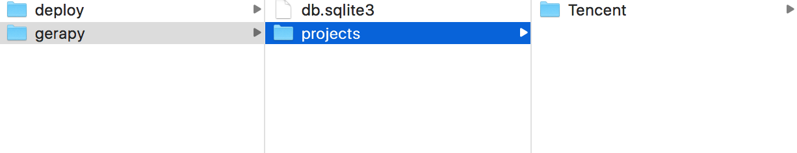
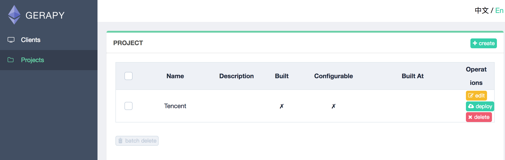

13.Gerapy
学习目标
- 了解 什么是Gerapy
- 掌握 Gerapy的安装
- 掌握 Gerapy配置启动
- 掌握 通过Gerapy配置管理scrapy项目
1.Gerapy介绍:
Gerapy 是一款 分布式爬虫管理框架，支持 Python 3，基于 Scrapy、Scrapyd、Scrapyd-Client、Scrapy-Redis、Scrapyd-API、Scrapy-Splash、Jinjia2、Django、Vue.js 开发，Gerapy 可以帮助我们：
- 更方便地控制爬虫运行
- 更直观地查看爬虫状态
- 更实时地查看爬取结果
- 更简单地实现项目部署
- 更统一地实现主机管理
2.Gerapy的安装
1.执行如下命令，等待安装完毕
pip3 install gerapy
2.验证gerapy是否安装成功
在终端中执行 gerapy 会出现如下信息
"""
Usage:
gerapy init [--folder=
"""
3.Gerapy配置启动
1.新建一个项目
gerapy init
执行完该命令之后会在当前目录下生成一个gerapy文件夹，进入该文件夹，会找到一个名为projects的文件夹

2.对数据库进行初始化(在gerapy目录中操作)，执行如下命令
gerapy migrate
对数据库初始化之后会生成一个SQLite数据库，数据库保存主机配置信息和部署版本等

3.启动 gerapy服务
gerapy runserver
此时启动gerapy服务的这台机器的8000端口上开启了Gerapy服务，在浏览器中输入http://localhost:8000就能进入Gerapy管理界面，在管理界面就可以进行主机管理和界面管理

4.通过Gerapy配置管理scrapy项目
- 配置主机
1.添加scrapyd主机


需要添加 IP、端口，以及名称，点击创建即可完成添加，点击返回即可看到当前添加的 Scrapyd 服务列表,创建成功后,我们可以在列表中查看已经添加的服务
2.执行爬虫,就点击调度.然后运行. (前提是: 我们配置的scrapyd中,已经发布了爬虫.)


配置Projects 1.我们可以将scarpy项目直接放到 /gerapy/projects下. 
2.可以在gerapy后台看到有个项目 
3.点击部署点击部署按钮进行打包和部署，在右下角我们可以输入打包时的描述信息，类似于 Git 的 commit 信息，然后点击打包按钮，即可发现 Gerapy 会提示打包成功，同时在左侧显示打包的结果和打包名称。


4.选择一个站点，点击右侧部署，将该项目部署到该站点上

5.成功部署之后会显示描述和部署时间

6.来到clients界面，找到部署该项目的节点，点击调度

7.在该节点中的项目列表中找到项目，点击右侧run运行项目

补充:
1.Gerapy 与 scrapyd 有什么关联吗?
我们仅仅使用scrapyd是可以调用scrapy进行爬虫. 只是需要使用命令行开启爬虫 curl http://127.0.0.1:6800/schedule.json -d project=工程名 -d spider=爬虫名 使用Greapy就是为了将使用命令行开启爬虫变成 “小手一点”. 我们在gerapy中配置了scrapyd后,不需要使用命令行,可以通过图形化界面直接开启爬虫.
小结
- 了解 什么是Gerapy
- 掌握 Gerapy的安装
- 掌握 Gerapy配置启动
- 掌握 通过Gerapy配置管理scrapy项目